🏠 Homepage do produto
A primeira tela após login. Tabs Prototype / Slide deck / From template / Other. Subtab Wireframe vs High fidelity. Form de novo projeto à esquerda, "Recent" no centro com tutorial padrão, "Set up design system" CTA destacado.
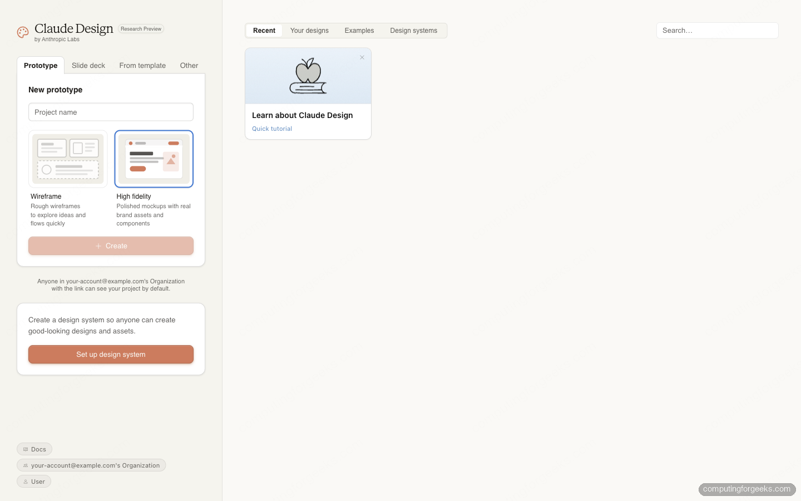
O que prestar atenção
- • "Research Preview by Anthropic Labs" — Claude assume explicitamente o status
- • Tabs separam Prototype (free-form) de Slide deck (force deck_stage.js)
- • Wireframe vs High fidelity = nível de detalhe inicial
- • "Set up design system" é CTA prioritária — Anthropic empurra você a definir DESIGN.md cedo
- • Org default: "Anyone in your-account@example.com's Organization" pode ver — atenção a LGPD/sigilo
📋 Workspace vazio com "Start with context"
Ao criar projeto novo, Claude te guia: "Designs grounded in real context turn out better". 4 caminhos para alimentar contexto: Design System, Add screenshot, Attach codebase, Drag in a Figma file. À direita, canvas em branco com "Creations will appear here" e "Start with a sketch".
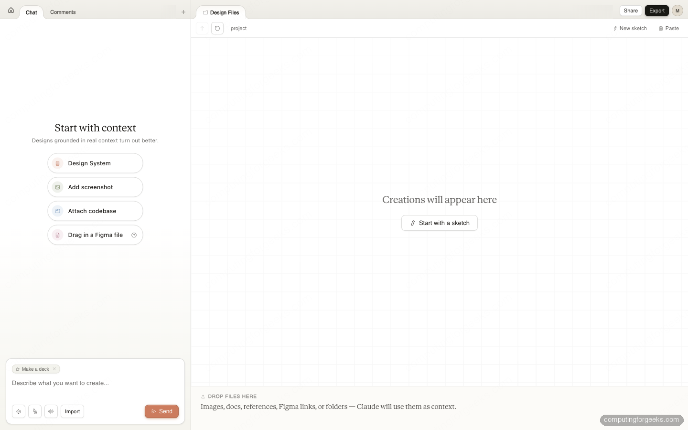
Os 4 caminhos para contexto (na ordem de impacto)
- Design System — DESIGN.md ou token file
- Attach codebase — repo GitHub completo (mais rico)
- Drag in a Figma file — .fig importado (visual + structure)
- Add screenshot — imagem de referência (visual only)
✍️ Prompt sendo digitado (chip "Make a deck")
Note o chip "Make a deck" acima do textarea — Claude detecta o tipo de output pelo prompt. Você descreve livremente: "A ten-slide investor pitch deck for Pivotal Analytics, a B2B SaaS selling PostgreSQL query analysis... Tone: confident but honest, data-forward, no marketing fluff."
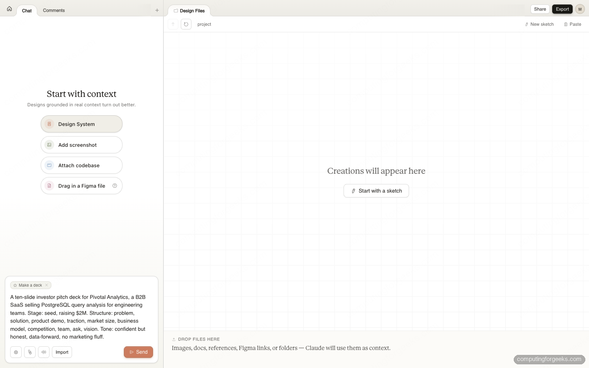
⚡ Claude processando (status "Shelling...")
Após enviar, Claude entra em ação. Status visível "Shelling..." (= invocando shell para preparar o projeto). Mensagem TIP no rodapé: "Every pixel argues for attention. Most should lose." — filosofia de design embutida na ferramenta.
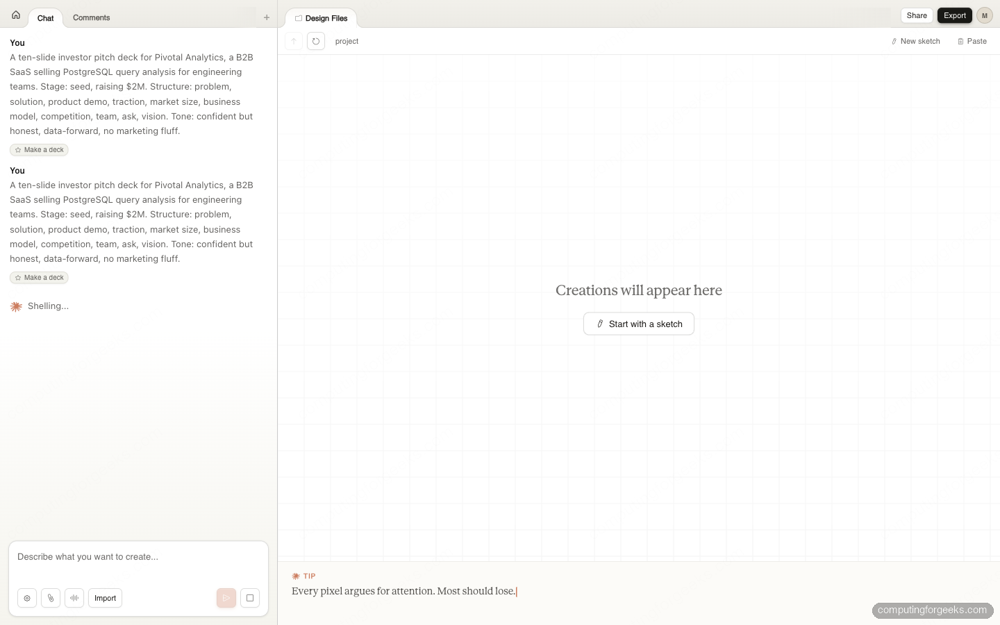
🗺️ Planejamento + scaffold com checklist
Claude lista todos os 10 slides em ordem (Pivotal Analytics, The Problem, Our Solution, Product, Traction...), depois "Let me set up the scaffolding" + Progress 0/3 com tasks: Scaffold deck-stage + design tokens · Build all 10 slides with consistent system · Verify and hand off. À direita, deck-stage.js aparece já criado (22.0 KB · JS).
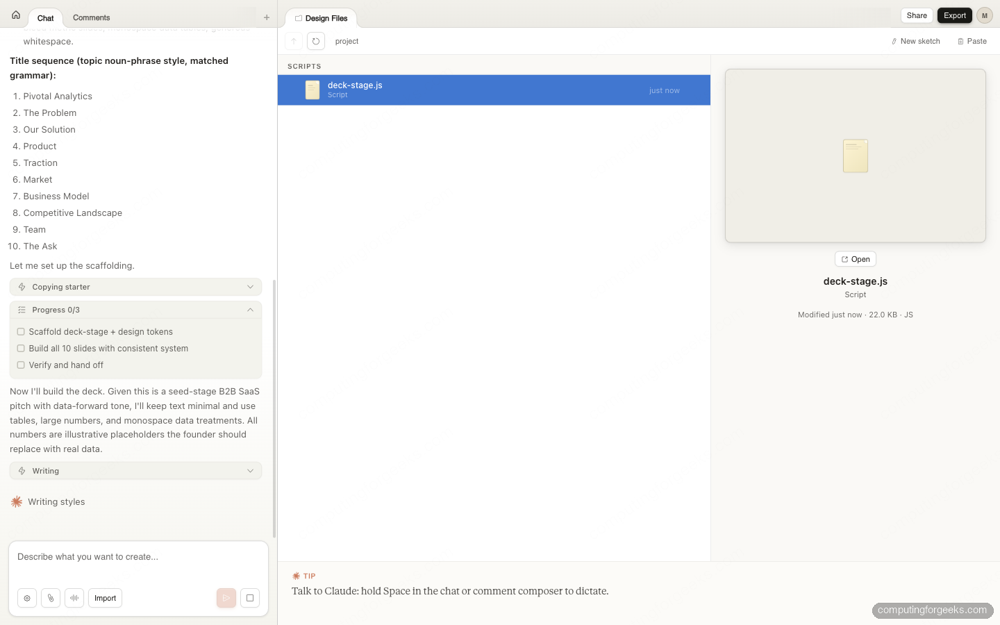
📌 Veja o workflow §3 do system prompt em ação
Esta tela mostra os passos 3 (Planejar) e 4 (Construir) do workflow oficial. Claude PRIMEIRO lista, PRIMEIRO planeja, DEPOIS constrói. Você pode interromper aqui pra revisar a lista — "Quero que o slide 7 seja Team em vez de Market" e ele reordena antes de gerar.
🎨 Canvas com deck renderizado (interativo, scrollável)
O canvas mostra o deck PRONTO sendo navegado. Toolbar superior com Tweaks · Comment · Edit · Draw + zoom 100% + Share + Export. Canvas central com slide tipográfico (acerto editorial — Pivotal Analytics, query observability for Postgres) que faz uso de deck-stage.js.
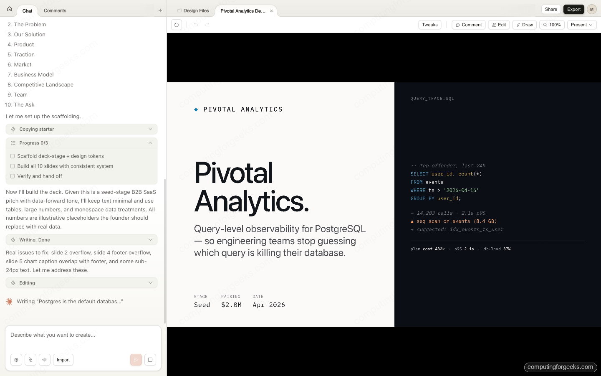
🎛️ Painel Tweaks aberto (canto superior direito)
Quando você clica no toggle Tweaks da toolbar, o painel aparece flutuante. Aqui ele controla cores e ajustes globais do deck Pivotal. Note como o painel é PEQUENO (regra do system prompt: "Mantenha a superfície dos Tweaks pequena").
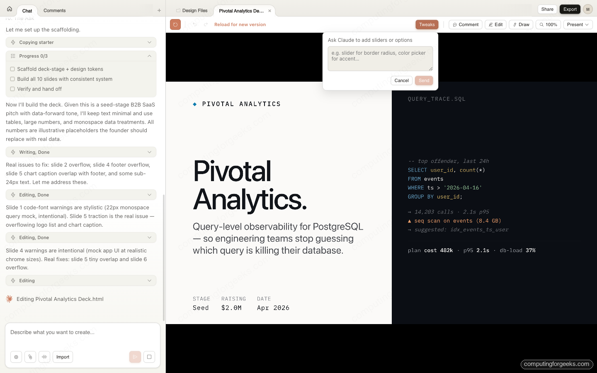
Outro exemplo de Tweaks: app de meditação com paleta swatches

Tweaks customizado: Device preview (Desktop/Mobile/Tablet), Theme (6 swatches: Stone, Moss, Mist, Clay, Dusk, Sakura, Ink), Typography (Heading size 100%, Body size 75%), Sections (toggles), Layout density (Comfy/Compact). Fonte: adweek.com
📤 Menu Export (canto superior direito)
Click em "Export" abre o dropdown com TODAS as opções de saída:
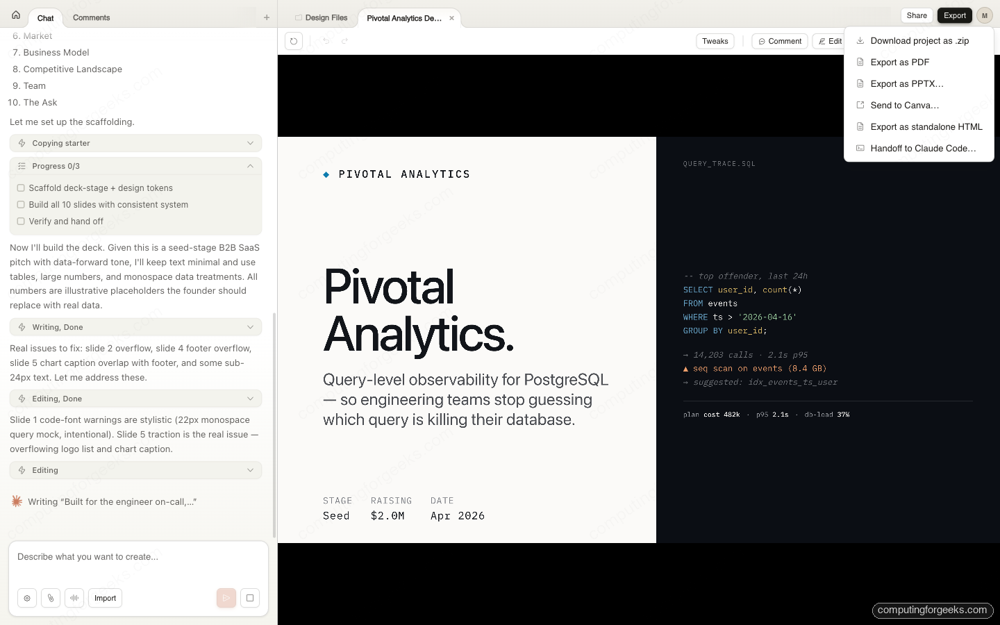
| Opção | Quando usar |
|---|---|
| Download zip | Backup completo do projeto (HTML + CSS + assets + DESIGN.md) |
| Export as PDF | Decks/slides para enviar a investidor |
| Export as PPTX | Decks editáveis em PowerPoint/Google Slides |
| Send to Canva | Continuar edição colaborativa no Canva (assets editáveis, não flatten) |
| Export as standalone HTML | Deploy direto em Netlify/Vercel (single file) |
| Handoff to Claude Code | Continuar implementação no terminal (bundle empacotado) |
🔗 Share modal + Handoff Claude Code
Dois modais críticos para "sair" do Claude Design — compartilhamento intra-org e handoff dev.
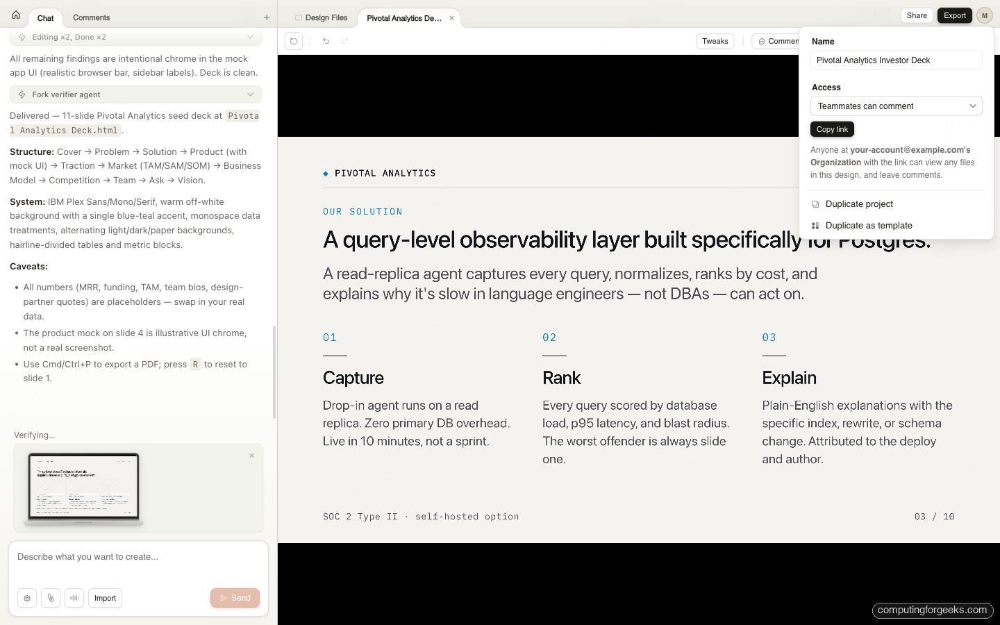
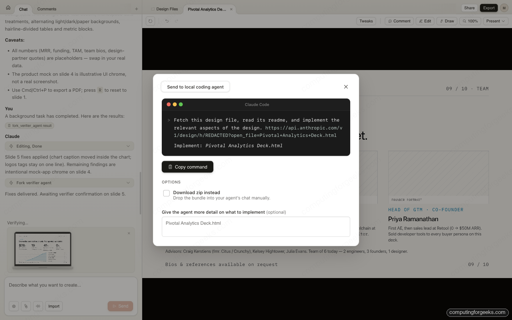
🎯 Bônus: visão integrada completa
Esta screenshot mostra a UI inteira em uso: chat à esquerda + canvas central com mockup "Hemlark Retreat '26" + variações geradas no painel direito + toolbar completa.
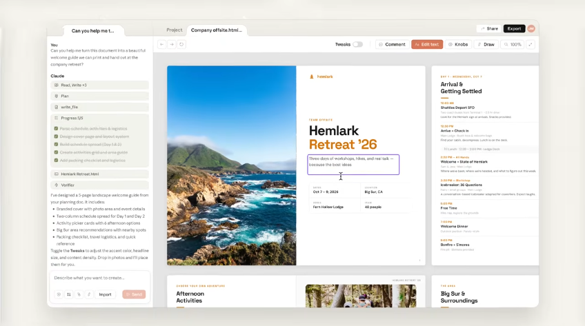